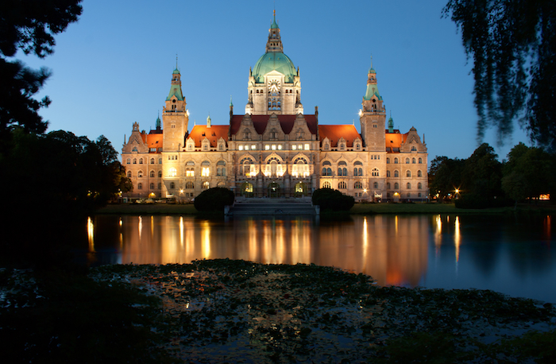
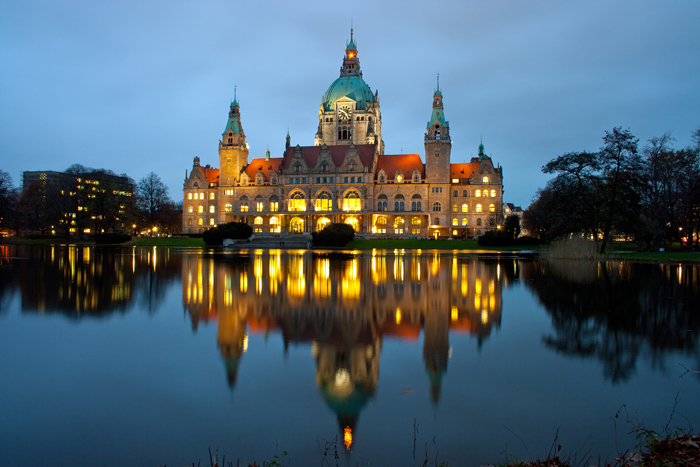

Hannover - die "stille Perle" habe ich neulich irgendwo gelesen. Ich muss sagen, das stimmt! Viele, denen ich von Hannover erzähle haben die Stadt oft gar nicht auf dem Radar. Zu Unrecht, wie ich finde! Die vielen unterschiedlichen Stadtviertel, das imposante Rathaus, der Maschsee, die unfassbar vielen Parks und Grünflächen machen Hannover zu einem wirklich lohnenden Ausflugsziel. In den letzten Jahren habe ich - vor allem abends - einige Fotos gemacht, die euch nun zeigen möchte.


Das neue Rathaus ist wohl das bekannteste Gebäude in Hannover und ähnelt schon fast einem Schloss, dass sich am besten abends von Maschpark betrachten lässt.